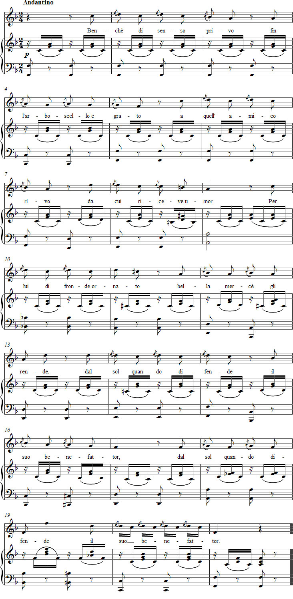

Vaccaj: Tehtävä 8b
Kuuntele äänite
Nuotit

Sanat
L'acciaccatura
Lyhyt etuhele
on kiitollinen ystävälliselle purolle,
jolta saa kosteuden.
Koristeellisilla lehvillään se antaa purolle
hyvän suojan aurinkoa vastaan.
Esitysohjeet
Tässä tehtävässä harjoitellaan lyhyttä etuhelettä eli acciaccaturea, joka ei vaikuta päänuottinsa aika-arvoon tai painotukseen. Sitä kutsutaan aksentoiduksi etuheleeksi (acciaccare merkitsee mm. tönäistä).
Edellisen laulun nautittavuus riippui paljolti pitkästä etuheleestä. Tässä laulussa mukaan tuleva lyhyt etuhele korostaa melodiassa sekunti-intervallia, mutta säestyksen kanssa sävellyksestä tulee melko viehättävä.
Ohjeita harjoitteluun
Kun melodiasta poistetaan kaikki 27 acciaccaturea, huomataan, että jäljelle jää useita pitkiä etuheleitä. Jos nekin kuoritaan pois, perusmelodia näyttäytyy niukkana:
sol - fa - fa - fa - fa - mi - mi
si - si - si - si - si - sol - sol
do2 - si - si - la - la - sol
si - si - si - si - si - si - si
sol - sol - sol - sol - sol - do2 - do2
do2 - si - si - si - si - si - si
la - sol - sol - fa - fa - mi
mi - mi - mi - mi - mi - mi2 - mi2
do2 - si - si - si - si - si - si - si - si - mi
Voidaan jälleen kummastella, kuinka helposti yksinkertaisesta äänentoistamisesta tulee nautittava melodia, kun siihen lisätään pitkä etuhele.
Kun olet kulkenut retken acciaccatuuran kautta appoggiatuuraan ja lopulta yksinkertaiseen perusmelodiaan, voit käydä saman tien takaisin laulaen.
Edellisen tehtävän appoggiaturat olivat painotetuilla tavuilla. Tässä tehtävässä niitä ja lyhyitä etuheleitä on niin paljon, että seitsentavuisen runon painottaminen käy ongelmalliseksi. Prosodisesta kunnianhimosta voidaan luopua suhteellisen hyvällä omallatunnolla.
Voit myös harjoitella poistamalla kaikki acciaccaturet ja korvaamalla ne italiankieliseen tekstiin sopivalla vokaalilla tai tavulla. Kokeile myös vokaaliyhdistelmiä kuten le – lo – le – lo – le – la – le tai vi – vo – vi – vä – vi – va – vi, joissa fraasin ykköselle tulee a-vokaalin ansiosta suurempi paino.
Lisää sitten lyhyt etuhele. Varo ettet ala painottaa niitä pääsävelen sijaan.
Ajatuksia tulkinnasta
Kun laulat Metastasion kokonaisuudessaan sävelletyn runon, voit ajatella tekstin yhteyttä etuheleiseen melodiaan; pieni puu yrittää osoittaa kiitollisuutensa purolle, joka estää sitä kuivumasta. Tekstin pehmeä ironia on saattanut olla Vaccajn valinnan syy. Onhan pieni melodiakin niin lastattu yksinkertaisilla koristeilla, että siinäkin on jotakin koomista.
Merkilliset sanapainotukset mm. tahdeissa 14, 18 ja 19 voivat synnyttää humoristisen efektin.
Etuheleen kanssa kuuluu se cu-u-i, lu-u-i ja su-u-o – ja ei mitään muuta.
Forshufvud, G. 1994. Con lieve fiato. Lärarhandledning till Nicola Vaccajs Metodo pratico. Göteborgs universitetet.